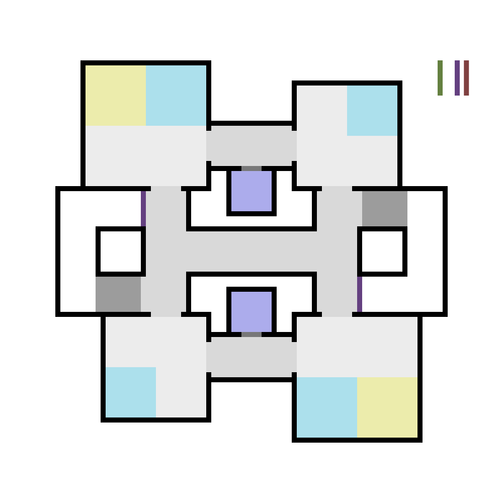
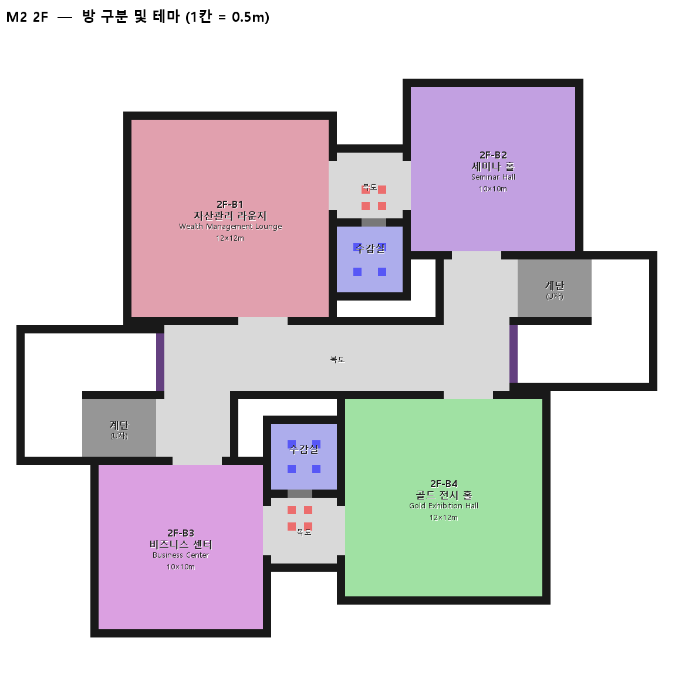
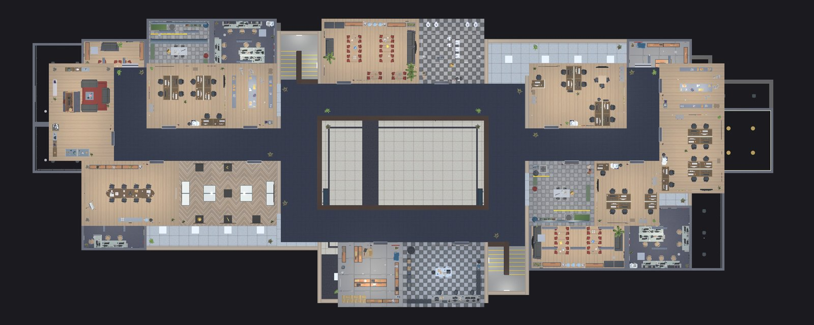
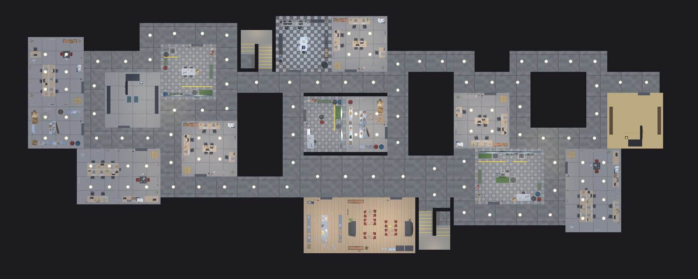

PROJECT 01 · TEAM야옹이는 못말려 (Thieflings)
경비 1명이 고양이 도둑 1~3명을 쫓는 1인칭 비대칭 멀티플레이 게임입니다. 저는 메인 레벨 디자이너로 참여했습니다(게임 크레딧 기준).
- 기간 · 팀
- 2026.10.23 ~ 11.21 (4주) · 4인(콘셉트, 레벨 디자인, 프로그래밍, 시스템 기획)
- 엔진
- Unity 6 (URP), Windows PC · Netcode for GameObjects
- 담당
- 소형·중형·마트 맵 설계 및 제작, 감옥 방, 튜토리얼 외형 보정, 일부 UI 안내 문구 작업
- 범위
- 중형 맵의 방·층 프리팹은 팀 프로젝트 시작 전(10월 초)부터 별도 프로젝트에서 작업했습니다.
설계 규칙 (모든 맵 공통)
규격
- 큰 방 12×12m, 중간 8×8m, 작은 방 4×4m
- 복도 폭 4m, 벽 두께 0.5m, 층고 4m
- 1칸 = 0.5m 그리드로 시안 작성
도주·추격 동선
- 수감실을 층마다 배치해 캠핑 방지
- 잡힌 도둑은 다른 층 수감실로 이동해 경비와 거리 확보
- 높은 난간은 점프, 낮은 구멍은 기어서 통과
전리품 배치
- 구역별 전리품 가치 등급 구분
- 코인 높이 0.3~1.25m, 방 안 가구 윗면 위주
- 플레이어 캡슐(반경 0.35m)이 통과 가능한 폭 0.86m 이상 확보
소형 맵 — 십자형 2층
중앙 홀과 좌우 수감실을 기준으로 방 크기를 세 단계로 나눈 복층 구조입니다.




60개코인 슬롯 (모두 높이 1.25m 이하)
0.86m통로 최소 폭 기준
0곳통행 불가로 잘려 나간 영역
0.5㎡↑슬롯마다 확보한 서 있을 자리
중형 맵 — 3층(B1/1F/2F) 고정 배치
처음에는 방 조합을 바꿔 가며 맵을 생성하는 방식으로 설계했고, 층마다 6가지 경우의 수를 검토한 뒤 하나의 배치로 확정했습니다.
과정: AI로 방 초안 생성 → 배치 조정 1차(10.06~) → 중앙 구역 확장(10.08) → 층별 경우의 수 정리 → 고정 배치 확정(11.03 씬 완성)





90개코인 슬롯 (B1 32 · 1F 28 · 2F 30)
45개가장 큰 라운드가 필요로 하는 수 (여유 2배)
17 / 17도달 가능한 수감 위치
636 / 636당시 전체 EditMode 테스트 통과
- 금고 방 2곳은 코인 슬롯을 3개로 고정해 선반 위 보상을 의도적으로 노출했습니다.
- 방 종류별 가중치는 두지 않고, 층·방 면적에 비례해 1~4개씩 배분했습니다.
마트 맵 — 121m × 81m 대형 맵
직접 그린 평면도(구역 배치)에서 출발했습니다. 판매 구역, 창고, 푸드코트, 직원 공간을 나누고, 구역마다 시야와 동선의 성격이 다르도록 설계했습니다.

2.2 / 2.4m선반 통로 / 교차 통로 폭
60개코인 슬롯
약 3,450개소품 점검 대상
67 → 2다른 판에 파고든 소품 수 (정리 전 → 후)
- 허공에 뜬 소품 177 → 9, 가장자리 밖으로 나간 소품 249 → 34로 줄였습니다.
- 평면도 v1 → v3로 세 차례 수정하며 통로 폭과 계산대 배치를 조정했습니다.
그 밖의 작업
감옥 방과 탈출 퍼즐
독립 감옥 방 씬의 초기 버전을 만들었고, 탈출 미니게임(쉬움 3×3, 어려움 4×4) UI 시안을 Figma에서 설계했습니다.
UI 안내 문구
영어로 남은 UI 문자열을 한글 용어로 통일하고, 첫 실행 안내와 아이템전 가이드, 포획 감점 표시 등 플레이어가 상황을 이해하도록 돕는 문구를 작성했습니다.
튜토리얼
연습 방의 외형(장식, 라벨)을 보정했습니다. 구조와 규칙 설계는 팀원이 담당했습니다.
팀 협업에 대해. 맵이 합쳐진 뒤에는 충돌 수정, 벽 이음새 보정, 최적화처럼 팀원이 함께 다듬은 부분이 많습니다. 이 페이지에서는 제가 직접 설계하고 제작한 부분만 다뤘습니다.